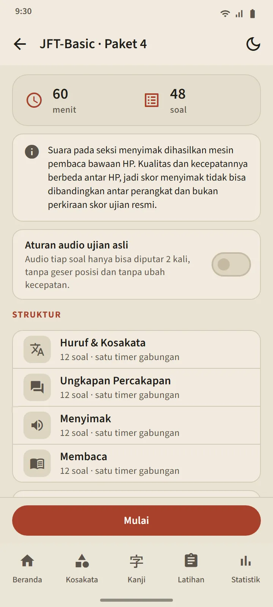
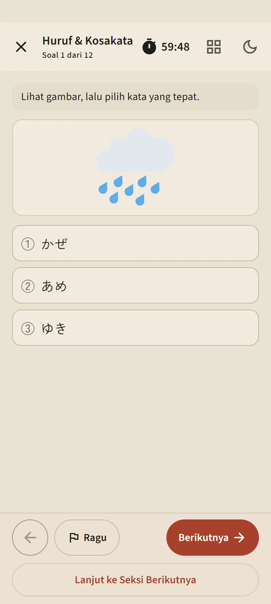
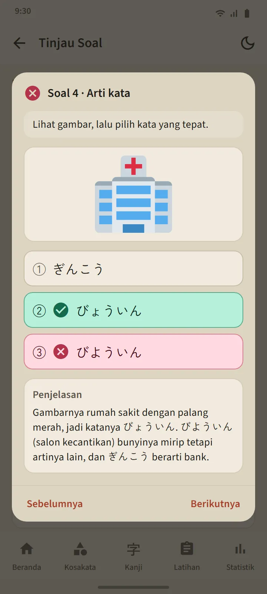

Enam level, 24 paket
Kartu tiap level di tab Latihan membuka halaman levelnya: tombol Mulai Paket, petak paket bernomor, dan riwayat. Sesudah semua paket selesai, Latihan campuran terbuka dengan soal yang belum pernah kamu lihat didahulukan. Paket baru ditambahkan lewat pembaruan aplikasi.
| Ujian | Paket | Soal per paket | Waktu |
|---|---|---|---|
| JFT-Basic | 8 | 48 | 60 menit |
| JLPT N5 | 8 | 68 | 90 menit |
| JLPT N4 | 2 | 85 | 115 menit |
| JLPT N3 | 2 | 102 | 140 menit |
| JLPT N2 | 2 | 107 | 155 menit |
| JLPT N1 | 2 | 101 | 165 menit |


Bentuk soal mengikuti ujian aslinya
Soal JFT-Basic memakai tiga pilihan (empat di tata bahasa), situasi dan pertanyaan dalam bahasa pengguna, dan gambar di banyak soal, seperti contoh soal resminya. Soal JLPT memakai empat pilihan, furigana sesuai levelnya, dan teks bacaan yang bentuknya beragam: cerita pendek, memo, pengumuman, pesan, email, dan tabel informasi. Setiap paket diaudit sebelum dirilis, dan tidak ada soal resmi yang disalin.
Sebelum mulai, layar Persiapan memperlihatkan struktur paket itu: seksi, jumlah soal, dan waktunya. Waktunya mengikuti ujian aslinya: satu waktu gabungan di JFT-Basic, waktu per seksi di JLPT. Sesudah lanjut ke seksi berikutnya, seksi sebelumnya tertutup, sama seperti di ruang ujian. Kamu bisa menandai soal yang ragu, keluar sementara (waktu tetap berjalan), dan melanjutkan dari tab Latihan.


Menyimak dengan suara Jepang di HP-mu
Naskah soal menyimak dibacakan oleh mesin pembaca bahasa Jepang di HP-mu, dengan suara yang berbeda untuk tiap pembicara. Pilihan jawabannya hanya dibacakan, tidak tercetak, seperti di ujian aslinya; soal JFT-Basic dan N5 memakai pilihan bergambar. Saklar "Aturan audio ujian asli" membatasi pemutaran sebanyak ujian aslinya: dua kali di JFT-Basic, satu kali di JLPT.
Karena suaranya dari HP masing-masing, kualitasnya berbeda antar perangkat; kalau HP belum punya suara bahasa Jepang, aplikasi menawarkan cara memasangnya dan bagian menyimak dilewati sampai suaranya ada.

Hasil pada skala resmi, lalu pembahasan tiap soal
Hasil JFT-Basic digambar pada garis 10–250 dengan tanda 145, 175, dan 200 beserta nama rentangnya: A1, A2.1, dan A2.2, dan kegunaan tiap rentang di ujian resmi. Hasil JLPT menampilkan skor per bagian penilaian dibanding ambang minimumnya, karena di ujian resmi satu bagian di bawah ambang berarti tidak lulus. Keduanya disertai persen benar per bagian dan per jenis soal.
Tombol Tinjau Soal membuka tiap soal dengan jawabanmu, jawaban yang benar, dan pembahasannya; soal menyimak juga menampilkan naskahnya. Pembahasan tersedia dalam 12 bahasa. Riwayat tiap level menyimpan latihan terbaru, dan grafik skornya ada di tab Statistik.
Skor ini perkiraan untuk mengukur kemajuan, bukan prediksi skor ujian resmi.
Soal tata bahasa yang polanya punya pelajaran langsung menautkannya lewat "Pelajari pola ini".


Gratis dan Premium
Semua paket terbuka di versi gratis. Sesudah kamu menekan Mulai, latihan berikutnya di level itu terkunci 7 hari; level lain tidak ikut terkunci, dan riwayat serta pembahasan tetap terbuka. Selama terkunci kamu bisa membuka satu latihan tambahan dengan menonton iklan. Premium tidak punya jeda. Iklan tidak pernah tampil di layar soal, untuk siapa pun.